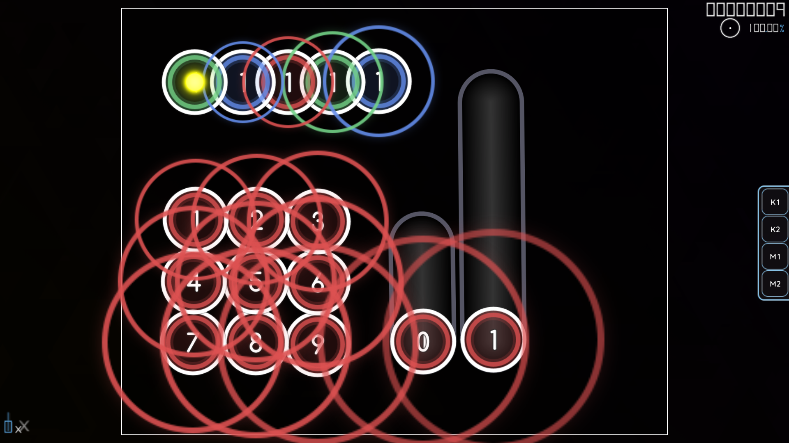
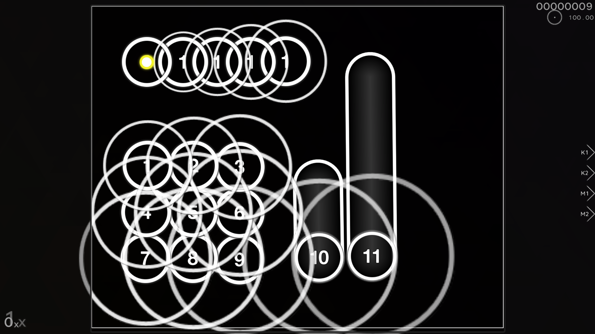

osu! skins
click on the skin name to download
aireu vv
aristia -dt
bdt - delta edit (instafade)
bdt - delta edit
bleh

bubbleman edit

idk why this skin was called aireu
rae 404
heartrate
how the sky was
lifeline funorange
maliszvv
monko
rafis edit
rafis sz (delta ver.)

stunar
tkova edit frnnd
toke newnew
tokiwa2
watr shield